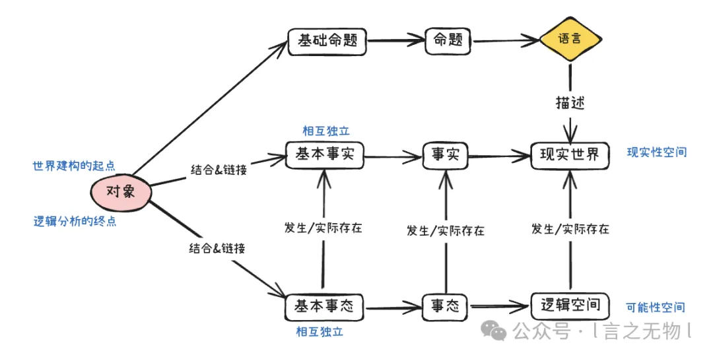

在逻辑与现实的交汇处，存在着根本性的哲学问题：世界何以被逻辑所图示？语言何以可能描述世界？
根据维特根斯坦前期的观点，这并非两个相互独立的问题。相反，它们在同一个结构中被回答：世界之所以可被言说，是因为世界的建构与语言的语义共享着同一种逻辑形式，而这个逻辑形式的终点，指向一个终极的概念——对象。
本文试图重构前期维特根斯坦的世界结构观：在现实性与可能性这两个空间中，对象既是分析的终点，也是建构的起点。而语言之所以有意义，在于其描述世界的可能性，而这个可能性依存于其命题必然有持续存在的对象作为所指这一逻辑前提。

现实性空间与可能性空间
前期维特根斯坦对世界结构的理解，始于两个空间的逻辑推演：现实世界（现实性空间）和逻辑空间（可能性空间）。这两个空间可以被解构为以下两条并行的逻辑下降路径：
- 现实性路径：现实世界 → 事实 → 基本事实 → 对象
- 可能性路径：逻辑空间 → 事态 → 基本事态 → 对象
这两条路径的共同导向——对象——既是现实性空间与可能性空间分析的终点，也是建构二者的起点。
这意味着：现实世界并非直接由"事物"堆砌而成，而是由"事实"的总和构成；而逻辑空间则是由"事态"的总和构成。无论是事实还是事态，其构成的基本单位（基本事实/基本事态）最终都由对象的结合与链接（即对象在逻辑形式上的可组合性）所生成。
既然现实世界和逻辑空间的建构起点都是"对象"，那么二者的分野又是什么？这涉及到了事实和事态的关系，也是两个空间的本质关系，即：现实性作为可能性之发生或者实际存在。
基本事实是基本事态之发生或实际存在，由此可以推导出，事实也必将是事态之发生或实际存在。具体而言，（基本）事态代表了对象按照逻辑形式可能产生的结合，而（基本）事实仅仅是确实发生或者实际存在的结合，因此，每一个现实世界中实际发生的（基本）事实，必将对应逻辑空间中至少一个可能性存在的（基本）事态。
因此我们可以得出一个结论：事实是事态的子集，即"存在的"事态。
换言之，以对象为起点建构出的逻辑空间，穷尽了所有可能的（基本）事态组合（即所有逻辑上的可能性）；现实世界，就是逻辑空间中被"点亮"的那一部分子集，（基本）事实是可能性空间中的（基本）事态坍缩到现实性空间的结果。逻辑空间中的对象，是纯粹可能性的载体；现实世界中的对象，则是被赋予了内容的实体。
这一结构图景进一步回答了另一个核心问题：为何逻辑总是先于经验？
因为逻辑空间（通过事态）勾勒了世界的边界，它规定了"什么是可能的"；而现实经验（通过事实）仅仅是在这一既定边界内，填充了"什么是实际的"。逻辑形式划定了世界的轮廓，而世界是这一轮廓内被填充的内容。
因此，对象不仅是可能性空间与现实性空间的结构分析的终点，更是二者建构的起点：它支撑起了可能性的逻辑空间，进而容纳了现实性的世界。
为何世界必然有实体？
结构图景已现，但一个根本性的理论缺口依旧存在：维特根斯坦凭什么断定，在无限可分的现象之下，必然存在一个始终持续存在的"对象"？或者说：世界为何必然有实体？
这并非基于经验的观察（我们从未在经验中见过纯粹的对象），而是基于语言可能性的先验要求。维特根斯坦认为语言的意义在于描述现实世界的可能性（即能够描述现实世界，语言才具备意义性），其论证可以概括为：
语言能够描述世界 → 命题必须有意义 → 意义必须确定 → 命题的指涉不能无限后退 → 对象必然存在。
1. 命题意义的确定性原则
维特根斯坦指出：“假如世界没有实体，那么一个命题是否有意义，就得依赖于另一个命题是否为真。”
如果世界没有绝对简单的实体，那么每一个名称都指的是一个复合体。当我们在命题中使用这个名称时，要确定这个命题是否有意义，就必须先确定该名称所指的复合体实际上已经"组合"在了一起。而表述这种"组合"本身又需要另一个命题。
2. 阻断无限后退
如果这种情况发生，我们将陷入意义的无限后退。为了确定一句话的意思，我们必须先验证另一句话的真值；而那句话的意义又依赖下一句话的真值，依此类推，永无止境。结果是，我们永远无法确定任何一个命题的意义，语言将丧失其作为图示工具的资格，沦为毫无指涉的噪音。
既然我们承认"我们能够通过语言谈论世界"这一基本事实，既然命题确实拥有确定的意义，那么这种无限后退必须被终止。
因此，必须存在一种终极的指涉物，它不再是复合的（因此不能被"拆解"或"打碎"），同时它的存在不依赖于任何事实的生灭（持存性）。这就是对象。对象是世界的实体，也是意义的锚点。
换言之，如果世界没有实体，语言就会崩溃。
因此，前期维特根斯坦认为，语言必然有意义，世界必然存在实体，对象必然存在。
形式与内容：先验存在的逻辑辩证
确立了对象的存在后，我们需要面对一个关于对象的认识论上的张力：如果我们无法在经验中直接认识"纯粹的对象"（我们只能看到结合后的事实），逻辑为何能将"对象"作为推演的起点？
这里需要引入"形式"与"内容"的严格分野。
1. 形式的先验性
逻辑并不关心对象具体"是"什么，逻辑只关心对象的结构性潜能。
- 结合的可能性（形式特性）：我们先验地知道，对象必须具备"能够与其他对象结合"的性质。这种"互锁性"是逻辑空间的结构要求。
- 存在的必然性（本体地位）：对象的"持续存在"不是一种经验性质，而是一种逻辑上的必然。即使我们从未在经验中见过纯粹的对象，为了保证意义的确定性，我们必须先验地承认对象的存在并且持续存在。
2. 内容的后验性
对象在现实中具体呈现为何种感官属性，这是经验科学的任务，而非形式逻辑的范畴。换言之，对象的具体性质不可先天被认识，这是知觉主体的局限性问题，而非逻辑结构的问题，这种性质的不可知也不影响对象在逻辑结构中的位置。
因此，对象在逻辑上是"无所谓存在与否"的（它独立于具体事实的生灭而存在），它是所有可能性存在的固定形式。我们在逻辑上谈论对象，谈论的是它作为"纯粹可能性的载体"。只要我们掌握了对象的形式（它必然存在，且遵循结合的逻辑规则），世界的逻辑骨架就已确立。至于骨架中填充了什么具体内容，那是经验世界的偶然，丝毫不撼动这一逻辑起点的必然。
逻辑空间的边界
综上所述，逻辑空间是一个由所有可能的事态构成的总集，代表着可能性空间（设为集合 A）。现实世界是这个集合中已实现的部分。
对集合 A 的讨论是"有意义"的，即使是假命题也位于逻辑空间内（因为它描述了一个可能的事态，只是该事态在现实中未发生）。
而在集合 A 之外，是逻辑不可能性空间（集合 B，即 A 的补集）。这里存放的不是"假命题"，而是**“无意义"的伪命题**。当我们将两个在逻辑形式上互不相容的对象强行组合时，我们并没有创造出一个假的事态，而是根本没有创造出任何图像。
这类组合违背了对象的句法规则（形式），它们处于逻辑空间之外。对于维特根斯坦而言，逻辑空间之外一无所有——我们不仅无法言说它们，甚至无法思考它们，因为思考本身就是一种逻辑图示活动。
因此，逻辑的边界，就是思想的边界，也是世界的边界。